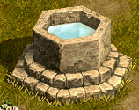

スキルマスタークエスト
<称号効果>- [職業] のすべてのスキルレベル+[1~5]
<説明>
- 難易度分のスキルレベルが増加
・マスターしたスキル難易度の合計分のスキルレベルが増加する。
難易度1のスキルをマスター → +1
難易度2と3のスキルをマスター → +5
| 職業 | クエスト | 職業 | クエスト |
|---|---|---|---|
| 剣士 | 騎士道 | 戦士 | 剣術 |
| ランサー | 傭兵術 | アーチャー | 偵察術 |
| ウィザード | ウィザードリィ | ウルフマン | ライカントロピー |
| ビショップ | 狂信 | 追放天使 | 天使階級学 |
| ビーストテイマー | レティの調教術 | サマナー | 召喚術の意味 |
| シーフ | - | 武道家 | カモンデラドの修練方法 |
| プリンセス | お嬢さまへの道 | リトルウィッチ | 星が知らせる道 |
| ネクロマンサー | 善意の降神術 | 悪魔 | 悪魔研究家ティアーク |
| 霊術師 | 彼らが聞かせてくれる話 | 闘士 | 悪党成敗！ |
| 光奏師 | 深い霧の中で | 獣人 | 足枷と宿縁 |
| メイド | メイドの心得 | 黒魔術師 | ダークレディーネープルス |
| マスケッティア | 不安定な自我 | アルケミスト | ポーション調合術 |
| 剣術 | |
|---|---|
剣術教本はブリッジヘッドにあるシーフギルド倉庫Ｂ区域にあるという。盗賊達から情報を手に入れられるだろう。 マルコムの剣術教本をマルコムに返そう。 |
|
| 受諾場所 | 古都ブルンネンシュティグ マルコム（111.115） |
| 受諾条件 | Lv50 戦士 戦士スキルを1つ以上マスター |
| 報酬 | 経験値25万 剣術 |
| シーフギルドの倉庫[Ｂ] Ｂ１ | シーフ倉庫番（Lv80)を倒す |
| 古都ブルンネンシュティグ | マルコムへ |
| 偵察術 | |
|---|---|
ハノブ高台望楼地下の最下層にいるテレスを訪ねよう。ハノブ高台望楼は‘東プラトン街道のエルベルグ山脈貫通路’にある。 高台望楼地下3階北側にあるオーガオフィサーの耳飾をテレスに届けよう。 オーガオフィサーの耳飾をテレスに届けよう。 ‘グレートフォレストのプラトン街道貫通路’へ冒険に出た冒険家アベルを探そう。 |
|
| 受諾場所 | 鉱山町ハノブ オスカー（64.57） |
| 受諾条件 | Lv50 アーチャー アーチャースキルを1つ以上マスター |
| 報酬 | 経験値25万 帰還の巻物 偵察術 |
| ハノブ高台望楼 Ｂ３ | テレス（37.84）へ オーガオフィサー（Lv55)を倒す テレスへ |
| グレートフォレスト / プラトン街道 | アベル（402.45）へ 行き方の詳細は ⇒ グレートフォレスト / プラトン街道 |
| レティの調教術 | |
|---|---|
モンスター鑑別士 5レベル 地図製作者 5レベル シティーウォーカー 1レベル 錬金術 1レベル 以上の称号を獲得し、ロマ村ビスルのレティの所へ戻ろう。 |
|
| 受諾場所 | ロマ村 ビスル レティ（35.12） |
| 受諾条件 | Lv50 ビーストテイマー ビーストテイマースキルを1つ以上マスター |
| 報酬 | 飼育学 |
| ロマ村 ビスル | モンスター鑑別士Lv5 地図製作者Lv5 シティーウォーカーLv1 錬金術Lv1 を獲得して、レティへ |


| 星が知らせる道 | |
|---|---|
誰かが星の力で、魔法都市スマグにあるウィザードの研究室に来い、というテレパシーを送っている。悪い予感はまったく感じないから、一度訪ねてみよう。 スマグ地下道B2からB4に上がる部分を探索し、天文学と関わる物を見つけて、アダプに伝えよう。 星の粉を手に入れた。アダプのもとに戻ろう。 |
|
| 受諾場所 | 魔法都市スマグ |
| 受諾条件 | Lv50 リトルウィッチ リトルウィッチスキルを1つ以上マスター |
| 報酬 | 経験値25万 天文学 |
| 魔法都市スマグ | 条件を満たしていれば自動で受諾 |
| ウィザードの研究室 | アダプ（27.79）へ |
| スマグ地下道 Ｂ２ | 行き方の詳細は ⇒ スマグ地下道へのワープ方法 П隠し扉（39.84）を破壊して進んだ先の、たいまつ（20.126）をクリック   |
| ウィザードの研究室 | アダプへ |
| 善意の降神術 | |
|---|---|
ビガプールの降神術研究家デモテルトは、降神術称号を受けるためには、まず降神術を通じて人々を助けて来なさいと言う。南西方面の農家と東の邸宅の中で、一番端にある南西方面の農家でラネスを捜してみよう。 デモテルトに頼まれた二人の内一人を降神術で手助けした。今度は東の住宅街でオアンを捜してみよう。 降神術で二人を助けた。デモテルトのもとに戻って事実を話そう。 デモテルトは、北フォーリンロード / ネイダック平原地帯に棲息するダスイージという化け蜘蛛を狩ると手に入れることができる赤色の糸を2つ持って来てくれと言う。北フォーリンロード / ネイダック平原地帯はビガプール南側の北フォーリンロード / ビガプール南部地域から東方へ移動すれば辿り着く。 デモテルトが頼んだ赤色の糸2つを全て手に入れた。デモテルトのもとに戻って伝えよう。 |
|
| 受諾場所 | 新興王国ビガプール デモテルト（27.24） |
| 受諾条件 | Lv50 ネクロマンサー ネクロマンサースキルを1つ以上マスター |
| 報酬 | 経験値25万 降神術 |
| 新興王国ビガプール | ラネス（35.160）へ オアン（146.128）へ デモテルトへ |
| 北フォーリンロード / ネイダック平原地帯 | ダスイージ（Lv80)Zinを倒す。毒、スタン、ワームバイト、アラクノフォビア攻撃あり |
| 新興王国ビガプール | デモテルトへ |
| 悪魔研究家ティアーク | |
|---|---|
北フォーリンロード/ネイダック平原の悪魔研究家ティアークは、東の丘の上に集まっているデビルスカラーたちを倒し、デビルスカラーの指輪を50個集めて来なさいと言う。デビルスカラー共はフォーリン望楼右側の丘に集まっている。 デビルスカラーの指輪を50個 全部集めた。ティアークの所に戻ろう。 ちゃっかり者の悪魔研究家ティアークは、あともう一度頼みを聞いてくれるなら悪魔学称号を与えると言う。新興王国ビガプールの商店地域でティアークが話したメプランという人を捜してみよう。商店地域はビガプール北西の方にある。 メプランの皮腐病を治療するためにはアルパス地下監獄B１にいる腐乱ミイラの角質が必要だと言う。10個手に入れて来よう。 メプランの皮腐病を治療するための腐乱ミイラの角質を全て手に入れた。メプランのもとに戻ろう。 メプランの悩みを解決した。ティアークのもとに戻って悪魔学称号をもらおう。 |
|
| 受諾場所 | 北フォーリンロード / ネイダック平原地帯 ティアーク（192.15） |
| 受諾条件 | Lv50 悪魔 悪魔スキルを1つ以上マスター |
| 報酬 | 経験値28万5000 花50個 悪魔学 |
| 北フォーリンロード / ネイダック平原地帯 | デビルスカラー（Lv65)Zinを倒す。スタン、ワームバイト攻撃あり ティアークへ |
| 新興王国ビガプール | メプラン（6.42）へ |
| アルパス地下監獄 Ｂ１ | 腐乱ミイラ（Lv65)を倒す |
| 新興王国ビガプール | メプランへ |
| 北フォーリンロード / ネイダック平原地帯 | ティアークへ |
| 彼らが聞かせてくれる話 | |
|---|---|
ライアの言葉通りならば、ダメル地下遺跡のどこかにティモナを捜す手がかりが残されているはずだ。それを探し出してライアに渡そう。 ティモナの手鏡の欠片を探し出した。荒廃都市ダメルに戻って、ライアに渡そう。 ライアのペンダントを身に着けた状態で、ダメル地下遺跡のリザードウォリアを倒し、彼らの魂と交感してみよう。 魂の交感に3回成功した。再び、ライアのところに戻ろう。 |
|
| 受諾場所 | 荒廃都市ダメル ライア（42.14） |
| 受諾条件 | Lv50 霊術師 霊術師スキルを1つ以上マスター |
| 報酬 | 心霊術 |
| 冒険家協会アリアン支部 / アリアン旅館 | 受諾条件を満たしていれば、ロミーナ（16.19）から荒廃都市ダメルへワープできる。 ?是非、会ってみたいです。もっと強くなりたいですから。 直接ライアへ行っても可 |
| ダメル地下遺跡 | 魔方陣（140.81）をクリック  |
| 荒廃都市ダメル | ライアへ |
| ダメル地下遺跡 | リザードウォリア（Lv75)Zinを倒す ?→1、?→2へワープした先。 ライアのペンダントを装備した状態で倒さないと、クエスト更新されない。 3回成功すると、クエスト更新と同時に強制死亡。  |
| 荒廃都市ダメル | ライアへ クエスト完了と同時にオアシス都市アリアンへワープ、死亡ペナルティも解除される |
| 悪党成敗！ | |
|---|---|
ルウの話によると、問題の闘士ラーシェンヌを懲らしめるためには、武器屋の主人であるエルカイソが作った武器が必要らしい。まずは、エルカイソに会ってみよう。 闘士ラーシェンヌの行方は、ウェテンロード / ケルチ大橋付近のギャングに聞けば分かるらしい。ルウの代わりに、エルカイソが作ったアブソリュート・シールド・ビーストを着用して、ラーシェンヌを懲らしめよう。 闘士ラーシェンヌを懲らしめた。小都市ビッグアイに戻ってルウに報告しよう。 ガディウス大砂漠 / デフヒルズ北側にいるリシャルに、ルウの秘伝書の封印を解いてもらおう。秘伝書を読めば、もっと強くなることができるはずだ。 |
|
| 受諾場所 | 小都市ビッグアイ ルウ（65.28） |
| 受諾条件 | Lv50 闘士 闘士スキルを1つ以上マスター |
| 報酬 | 闘魂学 |
| 小都市ビッグアイ | エルカイソ（73.45）へ |
| ウェテンロード / ケルチ大橋付近 | ラーシェンヌ（Lv100)Zinを倒す。（105.135）付近に1匹。 スタン、ワームバイト攻撃あり  アブソリュート・シールド・ビーストを装備しなくても、クエスト更新可能。  |
| 小都市ビッグアイ | ルウへ |
| ガディウス大砂漠 / デフヒルズ北側 | リシャル（238.95）へ |
| 深い霧の中で | |
|---|---|
失われた記憶を取り戻すためには、救出を手伝ってくれた協会所属の冒険家ジンジャーに会ってみる必要がありそうだ。ジンジャーは、ネイダック平原 / ラカリフサ北部地域あたりで任務遂行中らしい。 ジンジャーから、マリナという少女が行方を探していたようだと教えてもらった。もしかすると、過去の自分を知っているのかもしれない。農村ラカリフサにいるマリナに会ってみよう。 マリナから、小さなハンカチを受け取った。思い出のハンカチのようだが、普通のハンカチにしか見えない。しかし、あの少女の話しぶりからすると、意味も無くハンカチを渡してきたとは思えない。とりあえず、支部長バズケイルに相談してみよう。 支部長バズケイルに、新興王国ビガプールで有名な催眠術師ディノのところに行くように言われた。あまり気が進まないが、他に手がかりも無いので、試しに一度訪ねてみよう。 催眠術師ディノに、催眠術を成功させるには、ディノの懐中時計では無理だと言われた。指示された通り、北フォーリンロード / ビガプール南部地域にいるデビルスカラーから、デビルスカラーの懐中時計を手に入れてこよう。 デビルスカラーの懐中時計を手に入れた。再び、新興王国ビガプールにいる催眠術師ディノのところに戻ろう。 |
|
| 受諾場所 | 冒険家協会ビガプール支部 / 黄金色の小麦畑亭 支部長バズケイル（25.8） |
| 受諾条件 | Lv50 光奏師 光奏師スキルを1つ以上マスター |
| 報酬 | 分光学 |
| ネイダック平原 / ラカリフサ北部地域 | ジンジャー（180.24）へ |
| 農村ラカリフサ | マリナ（102.84）へ |
| 冒険家協会ビガプール支部 / 黄金色の小麦畑亭 | 支部長バズケイルへ |
| 新興王国ビガプール | 催眠術師ディノ（126.136）へ |
| 北フォーリンロード / ビガプール南部地域 | デビルスカラー（Lv77）Zinを倒す。スタン、ワームバイト攻撃あり |
| 新興王国ビガプール | 催眠術師ディノへ |
| 足枷と宿縁 | |
|---|---|
協会長シュルトがラウビーツのいる、テンドペンド平原 / トワイライト滝を訪ねてほしいという。 ラウビーツが過去の因縁を断ち切るためにゾロスを倒せと言った。 ゾロスはテンドペンド平原 / トワイライト滝付近で一番展望がいい所を探してみよう。 ゾロスを倒した。再びラウビーツの所に戻ろう。 ラウビーツが極意を伝授するためには本が必要だと言う。神聖王国ビガプールのダレインに会おう ラウビーツの秘伝書を受け取った。ラウビーツの所に戻ろう。 |
|
| 受諾場所 | 冒険家協会ブルンネンシュティグ本部 協会長シュルト（21.17） |
| 受諾条件 | Lv50 獣人 獣人スキルを1つ以上マスター |
| 報酬 | 経験値25万 幻影剣術 |
| テンドペンド平原 / トワイライト滝付近 | ラウビーツ（184.295）へ ゾロス（Lv50）Zinを倒す  ラウビーツへ |
| 新興王国ビガプール | ダレイン（92.43）へ |
| テンドペンド平原 / トワイライト滝付近 | ラウビーツへ |
| メイドの心得 | |
|---|---|
新興王国ビガプールの南西側農家地域の東と西に1つ、東南側貧民地域に1つ、合計3つの井戸から水を汲んでマーガレットに渡そう。一回に一つの井戸でしか汲むことはできない。 バヘル大河/北、東バヘル大河の交差地点付近にあるオーガの巣窟B1のオーガを倒して汚れた棍棒5つを獲得しよう。 汚れた棍棒をすべて獲得した。マーガレットに持って行って任務を完了しよう。 |
|
| 受諾場所 | 新興王国ビガプール マーガレット（161.48） |
| 受諾条件 | Lv50 メイド メイドスキルを1つ以上マスター |
| 報酬 | 経験値25万 掃除術 |
| 新興王国ビガプール | 井戸をクリック、◆マーガレットへ 井戸（10.131）（47.154）（112.161）の3箇所繰り返す。   |
| オーガの巣窟 Ｂ１ | オーガ（Lv65）を倒す |
| 新興王国ビガプール | マーガレットへ |
| ダークレディーネープルス | |
|---|---|
マーガレットがルビオラの試験を通過するにはガイストを倒せと言う。ガイストは北フォーリンロード / ビガプール南部地域の地下遺跡付近によく出没すると言う。 ガイストを倒した。試験通過の標として古いブローチを獲得した。マーガレットに渡してルビオラの居場所を聞こう。 マーガレットがルビオラはゴリマ沼地で静かに暮らしていると言う。ルビオラを訪ねよう。 ルビオラが隠しておいた暗黒の浄水を探してほしいと言う。暗黒の浄水は農村ラカリフサの井戸の下に隠されているらしい。 封印された黒い箱を見つけた。ルビオラの所に戻って暗黒魔術の秘伝を授かろう。 |
|
| 受諾場所 | 新興王国ビガプール マーガレット（161.48） |
| 受諾条件 | Lv50 黒魔術師 黒魔術師スキルを1つ以上マスター |
| 報酬 | 経験値25万 暗黒魔術 |
| 北フォーリンロード / ビガプール南部地域 | ガイスト（Lv50）Zinを倒す |
| 新興王国ビガプール | マーガレットへ |
| ゴリマ沼地 | ルビオラ（157.53）へ |
| 農村ラカリフサ | 井戸（75.91）をクリック  |
| ゴリマ沼地 | ルビオラへ |
| 不安定な自我 | |
|---|---|
東プラトン街道 / イースタンブリッジ付近にあるオート地下監獄B3のブレイジャーを退治し、光が消えた火の精粋 10個を獲得しよう。 光が消えた火の精粋を全て獲得した。古都ブルンネンシュティグのエイドンのところに戻ろう。 東プラトン街道 / イースタンブリッジ付近にあるアルパス地下監獄B1の ディムジェスター 5匹を倒そう。 ディムジェスターを退治した。古都ブルンネンシュティグのエイドンのところに戻ろう。 |
|
| 受諾場所 | 古都ブルンネンシュティグ エイドン（88.63） |
| 受諾条件 | Lv50 マスケッティア マスケッティアスキルを1つ以上マスター |
| 報酬 | 射撃術 |
| オート地下監獄 Ｂ３ | ブレイジャー（Lv58）を10匹倒す、非アクティブ |
| 古都ブルンネンシュティグ | エイドンへ |
| アルパス地下監獄 Ｂ１ | ディムジェスター（Lv64）を5匹倒す |
| 古都ブルンネンシュティグ | エイドンへ |
| ポーション調合術 | |
|---|---|
吸血鬼の血は鉄の道 / アウグスタ入口付近にいるヴァンパイアから入手できる。 吸血鬼の血をメイリンに持って行ってやろう。 |
|
| 受諾場所 | 古都ブルンネンシュティグ メイリン（111.153） |
| 受諾条件 | Lv50 アルケミスト アルケミストスキルを1つ以上マスター |
| 報酬 | ポーション調合術 |
| 鉄の道 / アウグスタ入口付近 | ヴァンパイア（Lv54）を倒す |
| 古都ブルンネンシュティグ | メイリンへ |